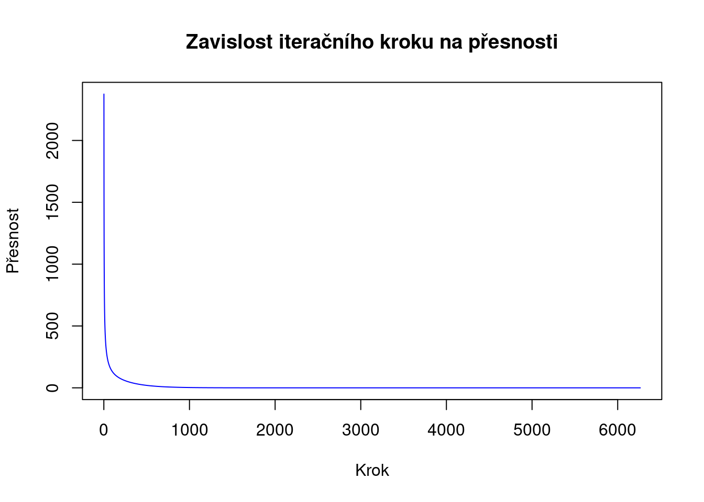

prazdna_matice <- matrix(0, nrow = 50, ncol = 50)
prazdna_matice[1, ] <- 100
A <- prazdna_maticeZápočet 22. 3. 2024
Zadání úlohy
Mějme čtvercovou matici řádu 50.
- V prvním řádku jsou její hodnoty 100.
- V ostatních okrajových buňkách jsou její hodnoty 0.
- Pro vnitřní buňky platí, že jsou aritmetickým průměrem sousedních buněk:
A[i, j] <- 0.25*(A[i-1, j] + A[i+1, j] + A[i, j-1] + A[i, j+1])
Určete hodnoty vnitřních buněk.
Prvotní řešení
Začal jsem podle zadání a vytvořil jsem si prázdnou matici, která obsahuje jenom nuly. Nuly jsem si zvolil vstupní podmínkou pro první výpočet aritmetického průměru vnitřních buněk. V následujícím kroku jsem vyplnil první řádek hodnotami 100 podle zadání. Pomocnou matici A jsem si vytvořil pro snadnější přístup k počáteční matici.
V následujícím kroku jsem postuně spočítal aritmetický průměr vnitřních buněk na základě již spočtené hodnoty v předchozím kroku.
for (i in 2:49) {
for (j in 2:49) {
A[i, j] <- 0.25 * (A[i - 1, j] + A[i + 1, j] + A[i, j - 1] + A[i, j + 1])
}
}Gaussova-Seidelova metoda
Popis metody
Gaussova-Seidelova metoda slouží k řešení systému lineárních rovnic. Jedná se o iterační metodu pro aproximaci řešení. Na rozdíl od Jacobiho metody používá pro výpočet složek vektoru již dříve vypočtené složky z aktuální iterace. Metoda se snaží najít řešení postupně, iterativně, až dosáhne dostatečné přesnosti.
Vliv na moje řešení
V předešlém kódu jsem si všiml, že pro výpočet hodnot používám již spočtené hodnoty v aktuální iteraci. Proto jsem se rozhodl přidat iterační cyklus.
A <- prazdna_matice
for(m in 1:100){
for (i in 2:49) {
for (j in 2:49) {
A[i, j] <- 0.25 * (A[i - 1, j] + A[i + 1, j] + A[i, j - 1] + A[i, j + 1])
}
}
}Po přidání iteračního cyklu jsem se ještě rozhodl kontrolovat konvergenci řešení, aby se řešení podobalo Gauss-Seidelově metodě. V podmínce jsem si určil toleranci pro porovnávání výsledků. Do matice B ukládám výslednou matici z předchozí iterace pro následné porovnání výsledků. Výsledné matice jsem se rozhodl porovnávat tak, že matice od sebe odečtu a výsledný hodnoty budou zapsány v absolutní hodnotě a nakonec všechny prvky matice rozdílu sečtu a porovnám s tolerancí. Počet iterací jsem zvýšil, aby mi řešení konvergovalo.
A <- prazdna_matice
krok <- c() # Vytvoření vektoru hodnot pro vykreslení
presnost <- c() # Vytvoření vektoru hodnot pro vykreslení
for(m in 1:10000){
B <- A
for (i in 2:49) {
for (j in 2:49) {
A[i, j] <- 0.25 * (A[i - 1, j] + A[i + 1, j] + A[i, j - 1] + A[i, j + 1])
}
}
suma <- sum(abs(A-B)) # Součet všech prvků matice pro porovnání
krok <<- c(krok, m) # Přidání hodnoty
presnost <<- c(presnost, suma) # Přidání hodnoty
if(suma<0.000000001){
print(paste("Počet iterací k dosažení požadované přesnosti:", m))
return(A)
}
}[1] "Počet iterací k dosažení požadované přesnosti: 6264"Závislot počtu iterací na přesnosti řešení
